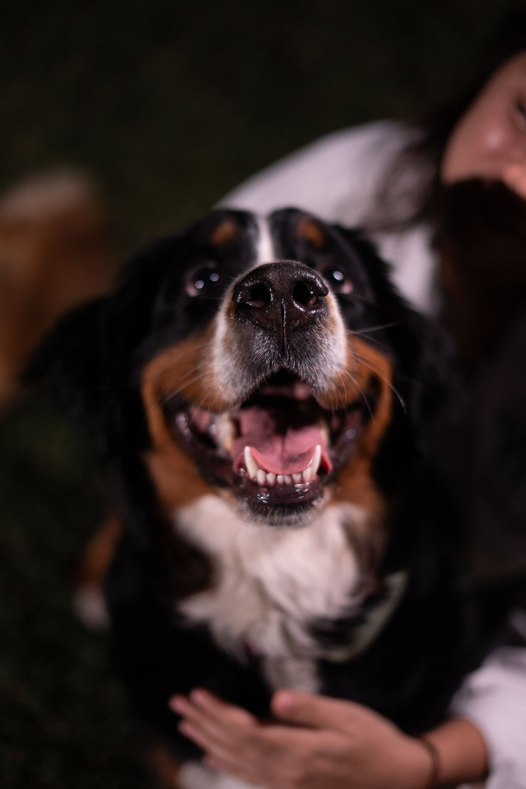
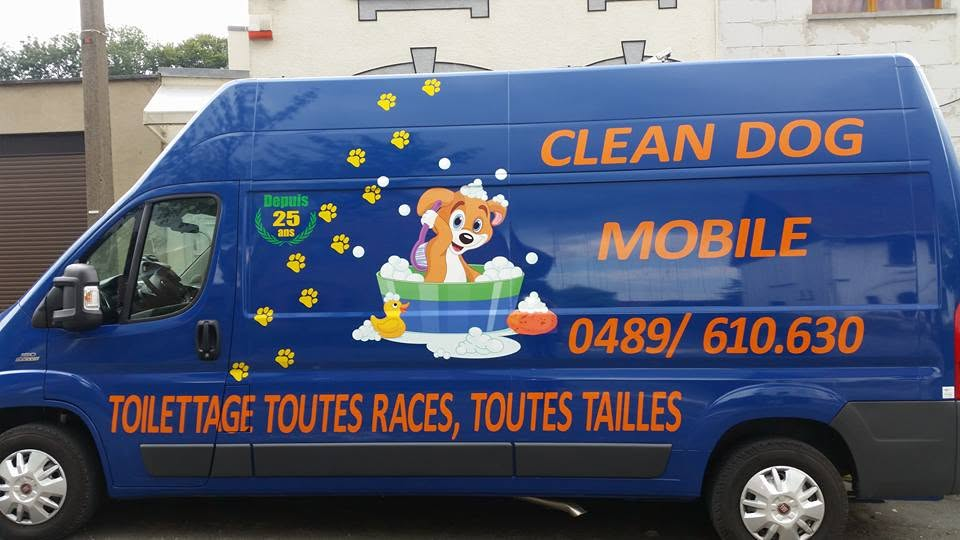

Clean Dog Mobile.
Clean Dog Mobile.Votre chien toiletté devant chez vous, avec douceur et expérience.
Monsieur Alexandre, toiletteur canin indépendant depuis 1993, prend soin de votre chien dans une camionnette spécialement aménagée et équipée. Le toilettage est réalisé individuellement, avec patience et dans le respect du bien-être de votre animal.

Prestations
- Toilettage complet ;
- Bain et séchage ;
- Coupe des ongles ;
- Nettoyage des oreilles.
On se déplace dans un rayon d'environ 25 km autour de Tubize. Des déplacements plus éloignés peuvent être envisagés sur demande.
Les tarifs sont établis selon la race, la taille, le type et l'état du pelage ainsi que le travail demandé. Le prix annoncé lors de la prise de rendez-vous est respecté dans la grande majorité des cas. En cas de travail exceptionnellement plus important, un supplément peut être envisagé après vous en avoir informé.
Pour prendre rendez-vous ou vérifier si votre commune est desservie, consultez la page Réservation.

